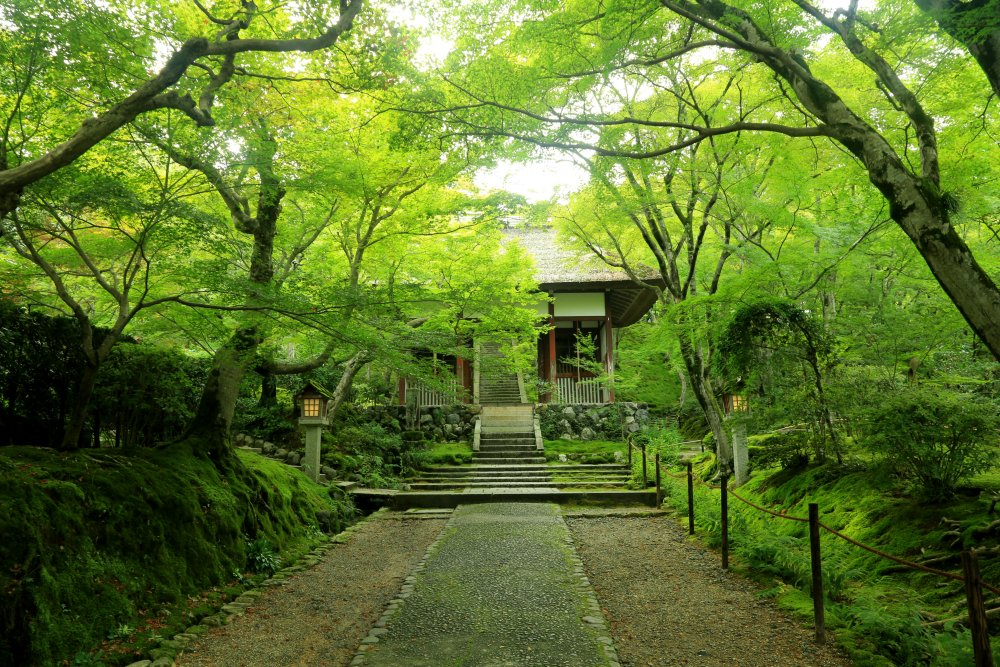
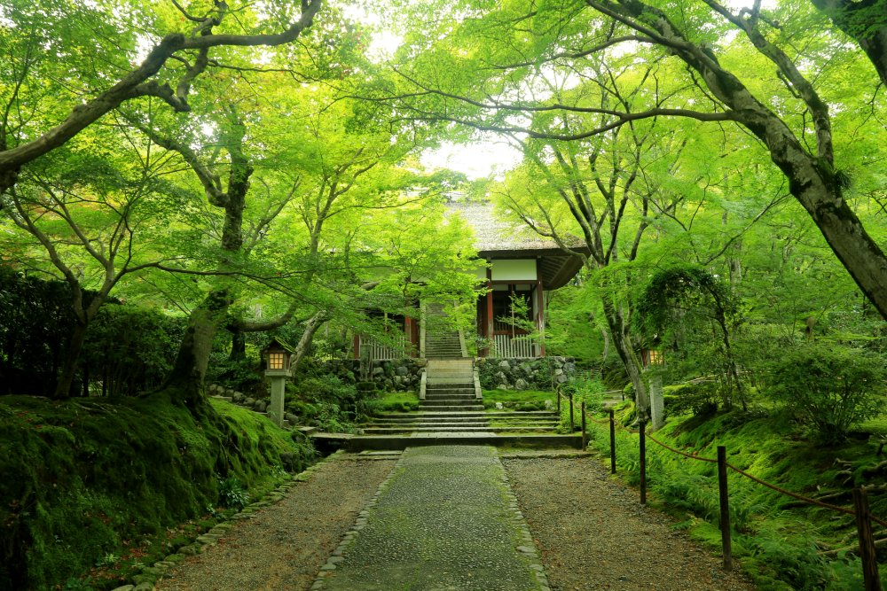

春季充滿櫻花之美，以及賞心悅目的翠綠大自然。夏季是京都下起雨來最美麗的季節。秋季是細細品嚐葉子顏色轉換的季節。冬季是京都最寧靜的季節。白雪皚皚的京都，是令人難以忘懷的景致。
春季充滿櫻花之美，以及賞心悅目的翠綠大自然。夏季是京都下起雨來最美麗的季節。秋季是細細品嚐葉子顏色轉換的季節。冬季是京都最寧靜的季節。白雪皚皚的京都，是令人難以忘懷的景致。
京都於794年起被定為日本首都，當時名為「平安京」，有說平安京在建設時仿照唐都長安和東都洛陽建設，此後發展成為日本中古及近代重要的政治與文化中心，至1869年遷都東京為止。
京都於794年起被定為日本首都，當時名為「平安京」，有說平安京在建設時仿照唐都長安和東都洛陽建設，此後發展成為日本中古及近代重要的政治與文化中心，至1869年遷都東京為止。
京都各區都擁有不同的風情，可以從東山的清水寺舞台眺望京都市區、從金閣、銀閣看出貴族的奢華、在宇治邂逅源氏物語的知名景點、潛伏於嵐山的竹林之中，品味夏天當中的一抹清涼。
京都各區都擁有不同的風情，可以從東山的清水寺舞台眺望整個京都市區、從金閣、銀閣看出室町時代幕府將軍的奢華、在宇治邂逅源氏物語的知名景點、潛伏於嵐山的竹林之中，品味夏天當中的一抹清涼。
 
